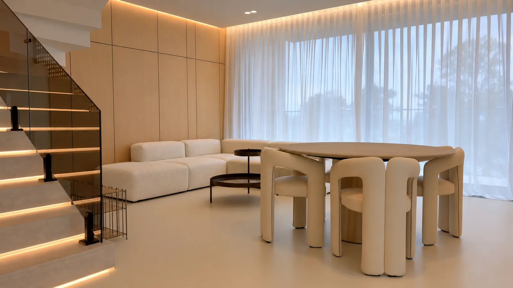
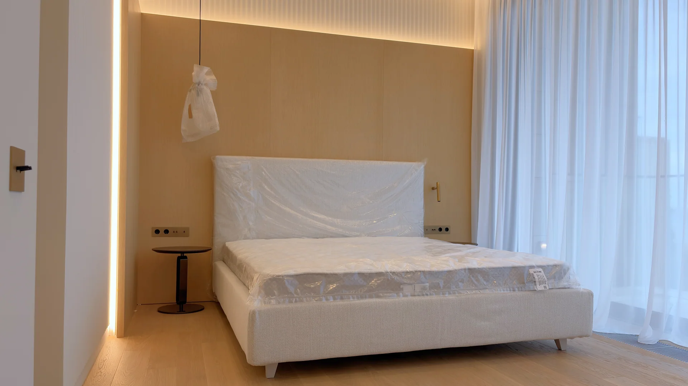
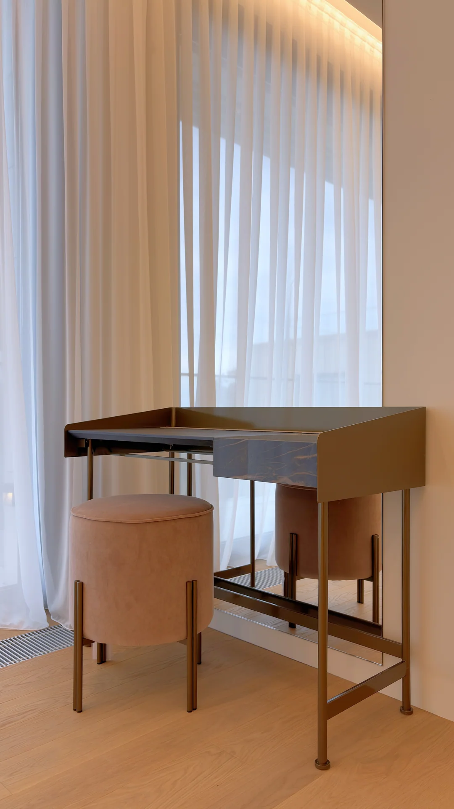
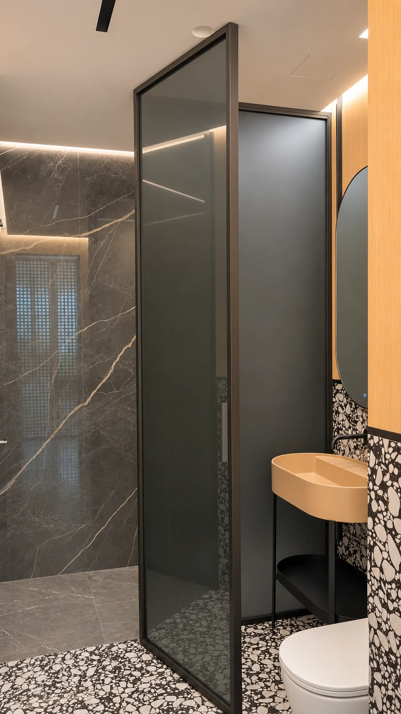
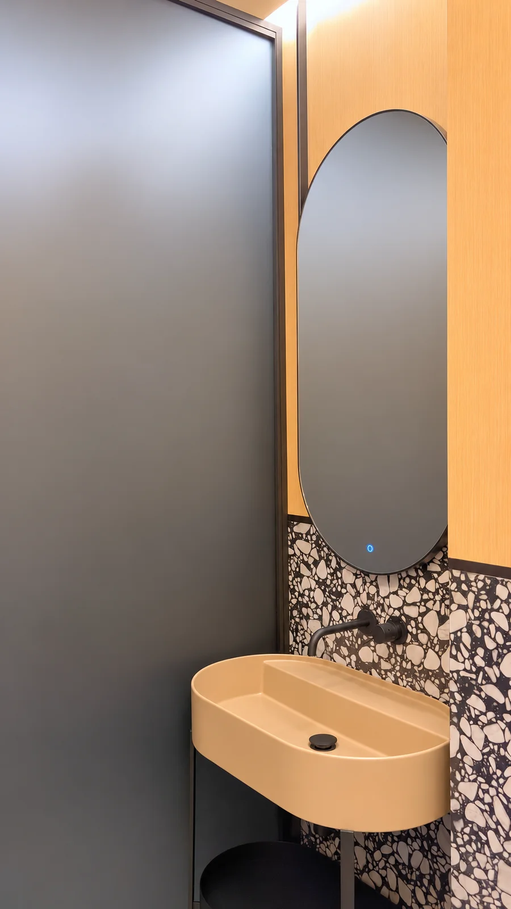

Сочи · Двухуровневый апартамент
Апартамент F
На первом уровне кухня и гостиная объединены в одно пространство. Лестница с подсветкой ступеней ведёт наверх, где расположена спальня.

Кухня и лестница
На острове разместили мойку и варочную панель. Над столешницей висит линейный светильник, а в гостиной мягкая подсветка проходит вдоль стен и выделяет каждую ступень.


Спальня на втором уровне
Здесь та же тёплая гамма, что и в гостиной. Подсветка обрамляет стену за изголовьем, а у окна стоит туалетный столик с пуфом.


Контрастная отделка санузла
Крупный рисунок плитки в душевой соседствует с мелким чёрно-белым рисунком у раковины. Тонированная стеклянная перегородка отделяет душевую.

